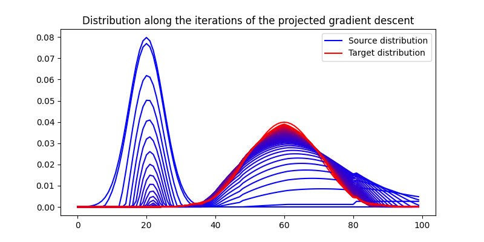
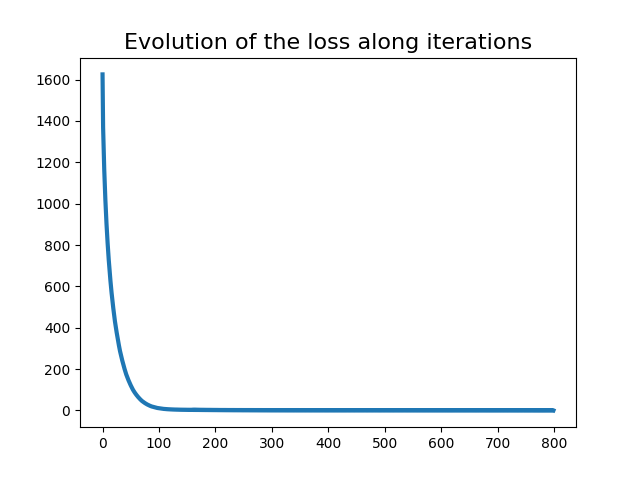
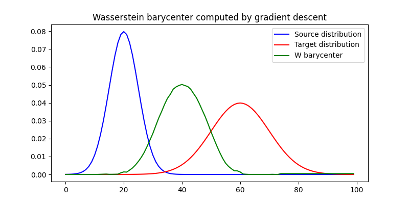
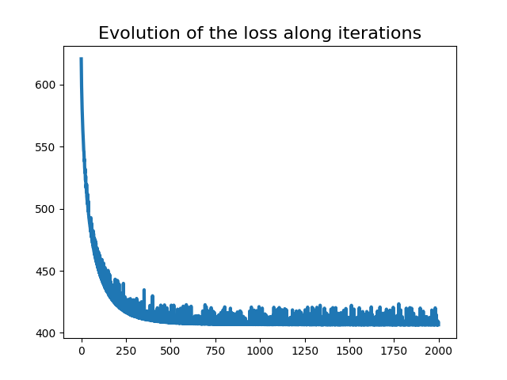

Note
Click here to download the full example code
Wasserstein 1D with PyTorch
In this small example, we consider the following minization problem:
where \(\nu\) is a reference 1D measure. The problem is handled by a projected gradient descent method, where the gradient is computed by pyTorch automatic differentiation. The projection on the simplex ensures that the iterate will remain on the probability simplex.
This example illustrates both wasserstein_1d function and backend use within the POT framework.
# Author: Nicolas Courty <ncourty@irisa.fr>
# Rémi Flamary <remi.flamary@polytechnique.edu>
#
# License: MIT License
import numpy as np
import matplotlib.pylab as pl
import matplotlib as mpl
import torch
from ot.lp import wasserstein_1d
from ot.datasets import make_1D_gauss as gauss
from ot.utils import proj_simplex
red = np.array(mpl.colors.to_rgb('red'))
blue = np.array(mpl.colors.to_rgb('blue'))
n = 100 # nb bins
# bin positions
x = np.arange(n, dtype=np.float64)
# Gaussian distributions
a = gauss(n, m=20, s=5) # m= mean, s= std
b = gauss(n, m=60, s=10)
# enforce sum to one on the support
a = a / a.sum()
b = b / b.sum()
device = "cuda" if torch.cuda.is_available() else "cpu"
# use pyTorch for our data
x_torch = torch.tensor(x).to(device=device)
a_torch = torch.tensor(a).to(device=device).requires_grad_(True)
b_torch = torch.tensor(b).to(device=device)
lr = 1e-6
nb_iter_max = 800
loss_iter = []
pl.figure(1, figsize=(8, 4))
pl.plot(x, a, 'b', label='Source distribution')
pl.plot(x, b, 'r', label='Target distribution')
for i in range(nb_iter_max):
# Compute the Wasserstein 1D with torch backend
loss = wasserstein_1d(x_torch, x_torch, a_torch, b_torch, p=2)
# record the corresponding loss value
loss_iter.append(loss.clone().detach().cpu().numpy())
loss.backward()
# performs a step of projected gradient descent
with torch.no_grad():
grad = a_torch.grad
a_torch -= a_torch.grad * lr # step
a_torch.grad.zero_()
a_torch.data = proj_simplex(a_torch) # projection onto the simplex
# plot one curve every 10 iterations
if i % 10 == 0:
mix = float(i) / nb_iter_max
pl.plot(x, a_torch.clone().detach().cpu().numpy(), c=(1 - mix) * blue + mix * red)
pl.legend()
pl.title('Distribution along the iterations of the projected gradient descent')
pl.show()
pl.figure(2)
pl.plot(range(nb_iter_max), loss_iter, lw=3)
pl.title('Evolution of the loss along iterations', fontsize=16)
pl.show()
- 
- 
/home/circleci/project/ot/lp/solver_1d.py:41: UserWarning: The use of `x.T` on tensors of dimension other than 2 to reverse their shape is deprecated and it will throw an error in a future release. Consider `x.mT` to transpose batches of matricesor `x.permute(*torch.arange(x.ndim - 1, -1, -1))` to reverse the dimensions of a tensor. (Triggered internally at ../aten/src/ATen/native/TensorShape.cpp:2318.)
cws = cws.T.contiguous()
Wasserstein barycenter
In this example, we consider the following Wasserstein barycenter problem $$ \eta^* = \min_\eta;;; (1-t)W(\mu,\eta) + tW(\eta,\nu)$$ where \(\\mu\) and \(\\nu\) are reference 1D measures, and \(t\) is a parameter \(\in [0,1]\). The problem is handled by a project gradient descent method, where the gradient is computed by pyTorch automatic differentiation. The projection on the simplex ensures that the iterate will remain on the probability simplex.
This example illustrates both wasserstein_1d function and backend use within the POT framework.
device = "cuda" if torch.cuda.is_available() else "cpu"
# use pyTorch for our data
x_torch = torch.tensor(x).to(device=device)
a_torch = torch.tensor(a).to(device=device)
b_torch = torch.tensor(b).to(device=device)
bary_torch = torch.tensor((a + b).copy() / 2).to(device=device).requires_grad_(True)
lr = 1e-6
nb_iter_max = 2000
loss_iter = []
# instant of the interpolation
t = 0.5
for i in range(nb_iter_max):
# Compute the Wasserstein 1D with torch backend
loss = (1 - t) * wasserstein_1d(x_torch, x_torch, a_torch.detach(), bary_torch, p=2) + t * wasserstein_1d(x_torch, x_torch, b_torch, bary_torch, p=2)
# record the corresponding loss value
loss_iter.append(loss.clone().detach().cpu().numpy())
loss.backward()
# performs a step of projected gradient descent
with torch.no_grad():
grad = bary_torch.grad
bary_torch -= bary_torch.grad * lr # step
bary_torch.grad.zero_()
bary_torch.data = proj_simplex(bary_torch) # projection onto the simplex
pl.figure(3, figsize=(8, 4))
pl.plot(x, a, 'b', label='Source distribution')
pl.plot(x, b, 'r', label='Target distribution')
pl.plot(x, bary_torch.clone().detach().cpu().numpy(), c='green', label='W barycenter')
pl.legend()
pl.title('Wasserstein barycenter computed by gradient descent')
pl.show()
pl.figure(4)
pl.plot(range(nb_iter_max), loss_iter, lw=3)
pl.title('Evolution of the loss along iterations', fontsize=16)
pl.show()
- 
- 
Total running time of the script: ( 0 minutes 4.743 seconds)